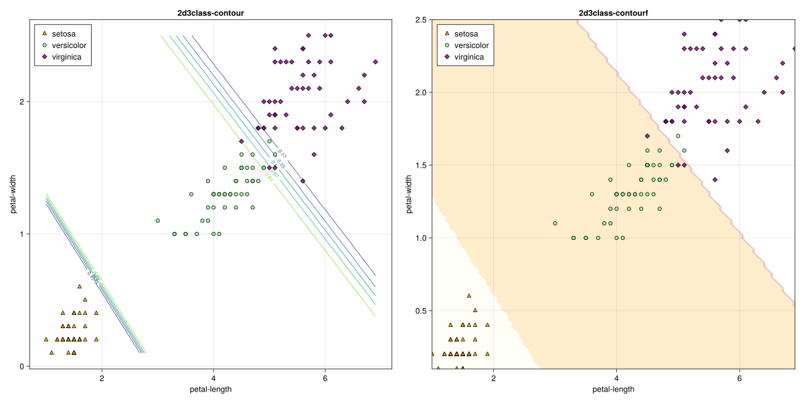

using CSV,DataFrames,Tidier,Pipe
using CairoMakie,AlgebraOfGraphics,MakieThemes
using MLJ,MLJModelInterface,Random
import MLJ:transform,predict
#Makie.set_theme!(ggthemr(:flat))3-IRIS logistics Classification
1. load package
2. load csv
nums=100
iris = load_iris();
iris = DataFrames.DataFrame(iris);
y, X = unpack(iris, ==(:target); rng=123);
X=select!(X,3:4)150×2 DataFrame
125 rows omitted
| Row | petal_length | petal_width |
|---|---|---|
| Float64 | Float64 | |
| 1 | 5.7 | 2.1 |
| 2 | 4.1 | 1.3 |
| 3 | 5.8 | 1.6 |
| 4 | 1.4 | 0.2 |
| 5 | 3.9 | 1.1 |
| 6 | 5.2 | 2.0 |
| 7 | 1.3 | 0.2 |
| 8 | 4.7 | 1.4 |
| 9 | 1.7 | 0.4 |
| 10 | 4.5 | 1.7 |
| 11 | 4.9 | 1.5 |
| 12 | 1.4 | 0.2 |
| 13 | 1.5 | 0.2 |
| ⋮ | ⋮ | ⋮ |
| 139 | 4.8 | 1.8 |
| 140 | 1.7 | 0.2 |
| 141 | 5.3 | 1.9 |
| 142 | 5.9 | 2.3 |
| 143 | 5.4 | 2.1 |
| 144 | 4.0 | 1.3 |
| 145 | 5.8 | 1.8 |
| 146 | 1.3 | 0.3 |
| 147 | 6.6 | 2.1 |
| 148 | 5.0 | 1.9 |
| 149 | 1.6 | 0.2 |
| 150 | 1.4 | 0.2 |
3. data processing
byCat = iris.target
cats = unique(byCat)
colors = [:orange,:lightgreen,:purple]
markers= [:utriangle,:circle,:diamond]3-element Vector{Symbol}:
:utriangle
:circle
:diamondget boundary data from extreme of 2 features
function boundary_data(df,;n=nums)
n1=n2=n
xlow,xhigh=extrema(df[:,1])
ylow,yhigh=extrema(df[:,2])
tx = LinRange(xlow,xhigh,n1)
ty = LinRange(ylow,yhigh,n2)
x_test = mapreduce(collect, hcat, Iterators.product(tx, ty));
x_test=MLJ.table(x_test')
return tx,ty,x_test
end
tx,ty,x_test=boundary_data(X)(LinRange{Float64}(1.0, 6.9, 100), LinRange{Float64}(0.1, 2.5, 100), Tables.MatrixTable{LinearAlgebra.Adjoint{Float64, Matrix{Float64}}} with 10000 rows, 2 columns, and schema:
:x1 Float64
:x2 Float64)4. MLJ workflow
LogisticClassifier = @load LogisticClassifier pkg=MLJLinearModels
mach = fit!(machine(LogisticClassifier(), X, y))
yhat=predict_mode(mach, x_test)|>Array|>d->reshape(d,nums,nums)
probs=predict(mach, x_test)|>Array
probs_res=broadcast(pdf, probs, "versicolor").|>(d->round(d,digits=2))|>d->reshape(d,nums,nums)[ Info: For silent loading, specify `verbosity=0`.
[ Info: Training machine(LogisticClassifier(lambda = 2.220446049250313e-16, …), …).
┌ Info: Solver: MLJLinearModels.LBFGS{Optim.Options{Float64, Nothing}, NamedTuple{(), Tuple{}}}
│ optim_options: Optim.Options{Float64, Nothing}
└ lbfgs_options: NamedTuple{(), Tuple{}} NamedTuple()import MLJLinearModels ✔100×100 Matrix{Float64}:
0.0 0.0 0.0 0.0 0.0 0.0 … 1.0 1.0 1.0 1.0 1.0 1.0 1.0
0.0 0.0 0.0 0.0 0.0 0.0 1.0 1.0 1.0 1.0 1.0 1.0 1.0
0.0 0.0 0.0 0.0 0.0 0.0 1.0 1.0 1.0 1.0 1.0 1.0 1.0
0.0 0.0 0.0 0.0 0.0 0.0 1.0 1.0 1.0 1.0 1.0 1.0 1.0
0.0 0.0 0.0 0.0 0.0 0.0 1.0 1.0 1.0 1.0 1.0 1.0 1.0
0.0 0.0 0.0 0.0 0.0 0.0 … 1.0 1.0 1.0 1.0 1.0 1.0 1.0
0.0 0.0 0.0 0.0 0.0 0.0 1.0 1.0 1.0 1.0 1.0 1.0 1.0
0.0 0.0 0.0 0.0 0.0 0.0 1.0 1.0 1.0 1.0 1.0 1.0 1.0
0.0 0.0 0.0 0.0 0.0 0.0 1.0 1.0 1.0 1.0 1.0 1.0 1.0
0.0 0.0 0.0 0.0 0.0 0.0 1.0 1.0 1.0 1.0 1.0 1.0 1.0
0.0 0.0 0.0 0.0 0.0 0.0 … 1.0 1.0 1.0 1.0 1.0 1.0 1.0
0.0 0.0 0.0 0.0 0.0 0.0 1.0 1.0 1.0 1.0 1.0 1.0 1.0
0.0 0.0 0.0 0.0 0.0 0.0 1.0 1.0 1.0 1.0 1.0 1.0 1.0
⋮ ⋮ ⋱ ⋮
1.0 1.0 1.0 1.0 1.0 1.0 0.0 0.0 0.0 0.0 0.0 0.0 0.0
1.0 1.0 1.0 1.0 1.0 1.0 0.0 0.0 0.0 0.0 0.0 0.0 0.0
1.0 1.0 1.0 1.0 1.0 1.0 … 0.0 0.0 0.0 0.0 0.0 0.0 0.0
1.0 1.0 1.0 1.0 1.0 1.0 0.0 0.0 0.0 0.0 0.0 0.0 0.0
1.0 1.0 1.0 1.0 1.0 1.0 0.0 0.0 0.0 0.0 0.0 0.0 0.0
1.0 1.0 1.0 1.0 1.0 1.0 0.0 0.0 0.0 0.0 0.0 0.0 0.0
1.0 1.0 1.0 1.0 0.99 0.99 0.0 0.0 0.0 0.0 0.0 0.0 0.0
1.0 1.0 1.0 0.99 0.99 0.99 … 0.0 0.0 0.0 0.0 0.0 0.0 0.0
1.0 0.99 0.99 0.99 0.99 0.99 0.0 0.0 0.0 0.0 0.0 0.0 0.0
0.99 0.99 0.99 0.99 0.99 0.98 0.0 0.0 0.0 0.0 0.0 0.0 0.0
0.99 0.99 0.99 0.98 0.98 0.97 0.0 0.0 0.0 0.0 0.0 0.0 0.0
0.99 0.99 0.98 0.98 0.97 0.96 0.0 0.0 0.0 0.0 0.0 0.0 0.05. plot results
fig=Figure(resolution=(1600,800))
function plot_res_contour()
ax = Axis(fig[1, 1], xlabel="petal-length", ylabel="petal-width", title="2d3class-contour")
contour!(ax, tx, ty, probs_res; labels=true)
for (idx,cat) in enumerate(cats)
indc = findall(x -> x == cat, byCat)
scatter!(ax,iris[:,3][indc],iris[:,4][indc];color=(colors[idx], 0.8), marker=markers[idx], markersize=10, strokewidth=1, strokecolor=:black, label="$cat")
end
axislegend(ax, position=:lt)
#save("./imgs/iris-logreg-2d-3class-contour.png",fig)
fig
end
function trans(i)
if i=="setosa"
res=1
elseif i=="versicolor"
res=2
else
res=3
end
end
ypred=[trans(yhat[i,j]) for i in 1:nums, j in 1:nums]
function plot_res_contourf()
ax = Axis(fig[1, 2], xlabel="petal-length", ylabel="petal-width", title="2d3class-contourf")
contourf!(ax, tx, ty, ypred; levels=length(cats),colormap=(:heat,0.2))
for (idx,cat) in enumerate(cats)
indc = findall(x -> x == cat, byCat)
scatter!(ax,iris[:,3][indc],iris[:,4][indc];color=(colors[idx], 0.8), marker=markers[idx], markersize=10, strokewidth=1, strokecolor=:black, label="$cat")
end
axislegend(ax, position=:lt)
#ave("./imgs/iris-logreg-2d-3class.png",fig)
fig
end
plot_res_contour()
plot_res_contourf()